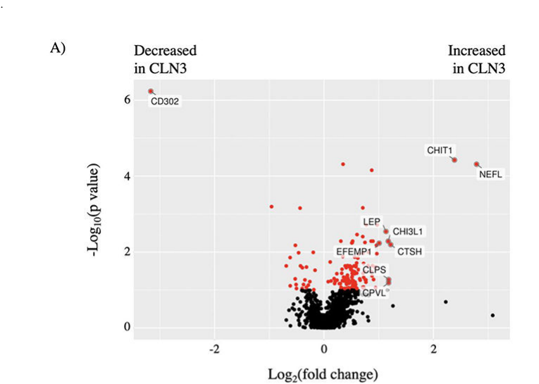

Neuronal ceroid lipofuscinosis 3 is a CLN3-related neuronal ceroid lipofuscinosis and the classic juvenile Batten disease branch. It usually presents in childhood with rapidly progressive visual failure from retinal degeneration, followed by cognitive and behavioral decline, seizures, motor deterioration, lysosomal fingerprint inclusions, and premature death. Current mechanistic evidence supports CLN3 as an endolysosomal membrane protein whose loss disrupts lysosomal trafficking, cholesterol handling, and storage biology.
Ask a research question about Neuronal Ceroid Lipofuscinosis 3. OpenScientist will conduct autonomous deep research using the Disorder Mechanisms Knowledge Base and PubMed literature (typically 10-30 minutes).
Do not include personal health information in your question. Questions and results are cached in your browser's local storage.
name: Neuronal Ceroid Lipofuscinosis 3
category: Mendelian
creation_date: "2026-06-13T00:00:00Z"
description: >
Neuronal ceroid lipofuscinosis 3 is a CLN3-related neuronal ceroid
lipofuscinosis and the classic juvenile Batten disease branch. It usually
presents in childhood with rapidly progressive visual failure from retinal
degeneration, followed by cognitive and behavioral decline, seizures, motor
deterioration, lysosomal fingerprint inclusions, and premature death. Current
mechanistic evidence supports CLN3 as an endolysosomal membrane protein whose
loss disrupts lysosomal trafficking, cholesterol handling, and storage biology.
disease_term:
preferred_term: neuronal ceroid lipofuscinosis 3
term:
id: MONDO:0008767
label: neuronal ceroid lipofuscinosis 3
synonyms:
- CLN3
- CLN3 disease
- neuronal ceroid lipofuscinosis type 3
- juvenile neuronal ceroid lipofuscinosis
- juvenile Batten disease
- Batten disease
parents:
- Neuronal Ceroid Lipofuscinosis
- Juvenile Neuronal Ceroid Lipofuscinosis
- Lysosomal Storage Disease
- Neurodegenerative Disease
references:
- reference: PMID:20301601
title: "Neuronal Ceroid Lipofuscinoses Overview."
tags:
- GeneReviews
findings: []
- reference: PMID:31926949
title: "Juvenile Batten Disease (CLN3): Detailed Ocular Phenotype, Novel Observations, Delayed Diagnosis, Masquerades, and Prospects for Therapy."
findings:
- statement: CLN3 causes juvenile NCL with early progressive visual loss.
- statement: Vacuolated lymphocytes and lysosomal fingerprint inclusions support diagnosis.
- reference: PMID:37245481
title: "Juvenile CLN3 disease is a lysosomal cholesterol storage disorder: similarities with Niemann-Pick type C disease."
findings:
- statement: CLN3 disease late endosome/lysosome fractions accumulate cholesterol.
- reference: PMID:36964447
title: "Early recognition of CLN3 disease facilitated by visual electrophysiology and multimodal imaging."
findings:
- statement: Confirmed CLN3 patients showed visual decline, retinal findings, and cognitive or motor features.
- reference: PMID:37113550
title: "Etiology of anxious and fearful behavior in juvenile neuronal ceroid lipofuscinosis (CLN3 disease)."
findings:
- statement: Behavioral symptoms such as mood disturbances and anxiety are common in JNCL/CLN3 disease.
- reference: PMID:37771451
title: "Treatment of non-epileptic episodes of anxious, fearful behavior in adolescent juvenile neuronal ceroid lipofuscinosis (CLN3 disease)."
findings:
- statement: Recurrent non-epileptic frightened facial and body expression episodes occur in more than half of post-adolescent JNCL patients.
- reference: PMID:38500130
title: "The parent and family impact of CLN3 disease: an observational survey-based study."
findings:
- statement: Insomnia and thought- and mood-related concerns are frequently reported in CLN3 caregiver surveys.
inheritance:
- name: Autosomal recessive inheritance
description: >
CLN3 disease is inherited in an autosomal recessive pattern and is caused by
biallelic pathogenic CLN3 variants.
inheritance_term:
preferred_term: Autosomal recessive inheritance
term:
id: HP:0000007
label: Autosomal recessive inheritance
evidence:
- reference: CGGV:assertion_6be652b4-092f-4d1c-9606-4dfeb689c4b9-2023-04-04T040000.000Z
reference_title: "CLN3 / neuronal ceroid lipofuscinosis (Definitive)"
supports: SUPPORT
evidence_source: OTHER
snippet: "CLN3 | HGNC:2074 | neuronal ceroid lipofuscinosis | MONDO:0016295 | AR | Definitive"
explanation: >
ClinGen classifies the CLN3-neuronal ceroid lipofuscinosis relationship
as definitive with autosomal recessive inheritance.
progression:
- phase: Early visual onset
age_range: 4 to 10 years
notes: >
Classic juvenile CLN3 typically starts with rapidly progressive visual loss
from retinal degeneration.
evidence:
- reference: PMID:31926949
reference_title: "Juvenile Batten Disease (CLN3): Detailed Ocular Phenotype, Novel Observations, Delayed Diagnosis, Masquerades, and Prospects for Therapy."
supports: SUPPORT
evidence_source: HUMAN_CLINICAL
snippet: "Presentation is typically in early childhood with vision loss at 4 to 10 years of age"
explanation: >
This CLN3 ocular phenotype paper summarizes the usual first clinical
phase of juvenile CLN3 disease.
- phase: Cognitive and behavioral decline
age_range: 7 to 10 years
notes: >
Cognitive and behavioral dysfunction usually follows the visual decline,
with anxiety, mood disturbance, and other atypical behaviors becoming
clinically important.
evidence:
- reference: PMID:31926949
reference_title: "Juvenile Batten Disease (CLN3): Detailed Ocular Phenotype, Novel Observations, Delayed Diagnosis, Masquerades, and Prospects for Therapy."
supports: SUPPORT
evidence_source: HUMAN_CLINICAL
snippet: "behavioral and cognitive dysfunction at 7 to 10 years of age"
explanation: >
This supports the timing of neurobehavioral decline after visual onset.
- reference: PMID:37113550
reference_title: "Etiology of anxious and fearful behavior in juvenile neuronal ceroid lipofuscinosis (CLN3 disease)."
supports: SUPPORT
evidence_source: OTHER
snippet: "behavioral symptoms like mood disturbances and anxiety are common."
explanation: >
This review supports behavioral symptoms as part of the CLN3 disease
trajectory.
- phase: Motor decline, seizures, and premature death
age_range: 10 years through the second or third decade
notes: >
Motor deterioration and seizures follow in later childhood; premature death
typically occurs in adolescence or young adulthood.
evidence:
- reference: PMID:31926949
reference_title: "Juvenile Batten Disease (CLN3): Detailed Ocular Phenotype, Novel Observations, Delayed Diagnosis, Masquerades, and Prospects for Therapy."
supports: SUPPORT
evidence_source: HUMAN_CLINICAL
snippet: "progressive motor decline and seizures at 10 to 13 years of age, eventually leading to premature death in the second or third decade of life."
explanation: >
This supports the late neurologic phase and mortality window in classic
juvenile CLN3 disease.
genetic:
- name: CLN3
association: Causal biallelic pathogenic variants
presence: Positive
gene_term:
preferred_term: CLN3
term:
id: hgnc:2074
label: CLN3
notes: >
CLN3 encodes an endolysosomal membrane protein. The common juvenile Batten
allele is a roughly 1 kb deletion spanning exons 7 and 8, but additional
pathogenic variants occur.
evidence:
- reference: PMID:31926949
supports: SUPPORT
evidence_source: HUMAN_CLINICAL
snippet: "is a form of NCL caused by sequence variants in the gene CLN3"
explanation: >
This human ocular phenotype series directly identifies CLN3 variants as
the cause of juvenile Batten disease/JNCL.
pathophysiology:
- name: CLN3 endolysosomal membrane dysfunction
conforms_to: "lysosomal_substrate_accumulation#Lysosomal Substrate Accumulation"
description: >
CLN3 dysfunction perturbs endolysosomal membrane biology, lysosomal cargo
handling, and cholesterol trafficking. The resulting lysosomal storage
phenotype includes fingerprint inclusions in patient material and
cholesterol accumulation in late endosome/lysosome fractions, contributing
to progressive retinal and neuronal degeneration.
cell_types:
- preferred_term: neuron
term:
id: CL:0000540
label: neuron
- preferred_term: retinal pigment epithelial cell
term:
id: CL:0002586
label: retinal pigment epithelial cell
- preferred_term: photoreceptor cell
term:
id: CL:0000210
label: photoreceptor cell
biological_processes:
- preferred_term: lysosomal transport
modifier: DYSREGULATED
term:
id: GO:0007041
label: lysosomal transport
- preferred_term: cholesterol transport
modifier: DYSREGULATED
term:
id: GO:0030301
label: cholesterol transport
evidence:
- reference: PMID:31926949
supports: SUPPORT
evidence_source: HUMAN_CLINICAL
snippet: "Blood film microscopy revealed vacuolated lymphocytes, and electron microscopy showed lysosomal (fingerprint) inclusions in all 8 patients."
explanation: >
Human CLN3 cases show lysosomal storage inclusions, supporting
conformance to lysosomal substrate accumulation.
- reference: PMID:37245481
supports: SUPPORT
evidence_source: HUMAN_CLINICAL
snippet: "INTERPRETATION: Our results support that JNCL is a lysosomal cholesterol storage disorder."
explanation: >
Patient autopsy late endosome/lysosome data support lysosomal cholesterol
storage as a CLN3 disease mechanism.
downstream:
- target: Lysosomal Cholesterol Storage
description: >
CLN3 disease late endosome/lysosome fractions accumulate cholesterol,
supporting a cholesterol storage branch of the disease mechanism.
causal_link_type: DIRECT
evidence:
- reference: PMID:37245481
supports: SUPPORT
evidence_source: HUMAN_CLINICAL
snippet: "INTERPRETATION: Our results support that JNCL is a lysosomal cholesterol storage disorder."
explanation: >
Human autopsy material supports lysosomal cholesterol storage downstream
of CLN3 dysfunction.
- target: Progressive Retinal Degeneration
description: >
CLN3 endolysosomal dysfunction causes rapidly progressive retinal
degeneration and visual failure.
causal_link_type: INDIRECT_UNKNOWN_INTERMEDIATES
evidence:
- reference: PMID:31926949
supports: SUPPORT
evidence_source: HUMAN_CLINICAL
snippet: "Participants presented with rapid bilateral vision loss over 1 to 18 months"
explanation: >
This supports retinal degeneration and visual failure as a downstream
clinical consequence of CLN3 disease.
- target: Progressive Neurobehavioral Decline
description: >
CLN3 disease progresses from cognitive and behavioral dysfunction to
seizures, motor decline, and later severe neuropsychiatric/autonomic
manifestations.
causal_link_type: INDIRECT_UNKNOWN_INTERMEDIATES
evidence:
- reference: PMID:31926949
supports: SUPPORT
evidence_source: HUMAN_CLINICAL
snippet: "behavioral and cognitive dysfunction at 7 to 10 years of age, and progressive motor decline and seizures at 10 to 13 years of age"
explanation: >
This summarizes the neurobehavioral and later neurologic progression of
juvenile CLN3 disease.
- name: Lysosomal Cholesterol Storage
description: >
CLN3 disease late endosome/lysosome fractions accumulate cholesterol,
supporting a lysosomal cholesterol storage mechanism that overlaps with
other lipid-trafficking lysosomal disorders.
cell_types:
- preferred_term: neuron
term:
id: CL:0000540
label: neuron
biological_processes:
- preferred_term: cholesterol transport
modifier: DYSREGULATED
term:
id: GO:0030301
label: cholesterol transport
evidence:
- reference: PMID:37245481
supports: SUPPORT
evidence_source: HUMAN_CLINICAL
snippet: "INTERPRETATION: Our results support that JNCL is a lysosomal cholesterol storage disorder."
explanation: >
This patient autopsy study supports cholesterol storage as a distinct
downstream CLN3 mechanism.
- name: Progressive Retinal Degeneration
description: >
CLN3 disease causes early, rapidly progressive retinal degeneration with
macular atrophy, outer retinal loss, electrophysiologic abnormalities, and
visual failure.
cell_types:
- preferred_term: retinal pigment epithelial cell
term:
id: CL:0002586
label: retinal pigment epithelial cell
- preferred_term: photoreceptor cell
term:
id: CL:0000210
label: photoreceptor cell
evidence:
- reference: PMID:31926949
supports: SUPPORT
evidence_source: HUMAN_CLINICAL
snippet: "Participants presented with rapid bilateral vision loss over 1 to 18 months"
explanation: >
Ocular cohort evidence supports rapid visual decline from retinal disease
as a distinct CLN3 downstream branch.
- name: Progressive Neurobehavioral Decline
description: >
CLN3 disease progresses to cognitive impairment, behavioral symptoms,
seizures, motor deterioration, sleep disruption, and advanced adolescent or
adult neuropsychiatric/autonomic episodes.
cell_types:
- preferred_term: neuron
term:
id: CL:0000540
label: neuron
evidence:
- reference: PMID:31926949
supports: SUPPORT
evidence_source: HUMAN_CLINICAL
snippet: "behavioral and cognitive dysfunction at 7 to 10 years of age, and progressive motor decline and seizures at 10 to 13 years of age"
explanation: >
This supports cognitive, behavioral, seizure, and motor progression as a
downstream CLN3 disease branch.
- reference: PMID:37771451
supports: SUPPORT
evidence_source: OTHER
snippet: "Recurrent non-epileptic episodes of frightened facial and body expression occur in more than half of post-adolescent patients with juvenile neuronal ceroid lipofuscinosis (JNCL, CLN3 disease)."
explanation: >
This supports advanced neurobehavioral/autonomic manifestations as part of
CLN3 progression.
phenotypes:
- name: Visual impairment
description: >
Rapid visual decline is the usual first recognized manifestation of classic
juvenile CLN3 disease.
phenotype_term:
preferred_term: Visual impairment
term:
id: HP:0000505
label: Visual impairment
evidence:
- reference: PMID:31926949
supports: SUPPORT
evidence_source: HUMAN_CLINICAL
snippet: "Participants presented with rapid bilateral vision loss over 1 to 18 months"
explanation: >
This CLN3 ocular case series documents rapid bilateral vision loss in
affected children.
- name: Retinal degeneration
description: >
CLN3 produces retinal degeneration with macular atrophy, outer retinal loss,
and characteristic electrophysiologic or imaging abnormalities.
phenotype_term:
preferred_term: Retinal degeneration
term:
id: HP:0000546
label: Retinal degeneration
evidence:
- reference: PMID:36964447
supports: SUPPORT
evidence_source: HUMAN_CLINICAL
snippet: "CLN3 patients presented at median age 6.2 years with visual decline."
explanation: >
This genetically confirmed CLN3 ocular cohort supports early visual
decline with retinal biomarker abnormalities.
- name: Cognitive impairment
description: Cognitive or behavioral decline commonly follows or accompanies visual loss.
phenotype_term:
preferred_term: Cognitive impairment
term:
id: HP:0100543
label: Cognitive impairment
evidence:
- reference: PMID:31926949
supports: SUPPORT
evidence_source: HUMAN_CLINICAL
snippet: "Six children displayed eccentric fixation, and 6 children had cognitive or neurologic signs at the time of diagnosis (75%)."
explanation: >
This cohort documents cognitive or neurologic signs at CLN3 diagnosis.
- name: Atypical behavior
description: >
Mood disturbance, anxiety, fearful episodes, and other behavioral symptoms
are common during the CLN3 neurodegenerative course.
phenotype_term:
preferred_term: Atypical behavior
term:
id: HP:0000708
label: Atypical behavior
evidence:
- reference: PMID:37113550
supports: SUPPORT
evidence_source: OTHER
snippet: "behavioral symptoms like mood disturbances and anxiety are common."
explanation: >
This supports behavior abnormalities within the CLN3/JNCL phenotype.
- reference: PMID:37771451
supports: SUPPORT
evidence_source: OTHER
snippet: "Recurrent non-epileptic episodes of frightened facial and body expression occur in more than half of post-adolescent patients with juvenile neuronal ceroid lipofuscinosis (JNCL, CLN3 disease)."
explanation: >
This supports atypical fearful behavioral episodes in post-adolescent
CLN3 disease.
- name: Sleep disturbance
description: Insomnia and related sleep disruption are frequently reported by CLN3 caregivers.
phenotype_term:
preferred_term: Sleep disturbance
term:
id: HP:0002360
label: Sleep disturbance
evidence:
- reference: PMID:38500130
supports: SUPPORT
evidence_source: HUMAN_CLINICAL
snippet: "Insomnia and thought- and mood-related concerns were reported frequently."
explanation: >
Parent/caregiver survey data support sleep disturbance, specifically
insomnia, as a frequent CLN3-associated concern.
- name: Motor deterioration
description: Progressive motor decline is part of the juvenile CLN3 trajectory.
phenotype_term:
preferred_term: Motor deterioration
term:
id: HP:0002333
label: Motor deterioration
evidence:
- reference: PMID:31926949
supports: SUPPORT
evidence_source: HUMAN_CLINICAL
snippet: "Presentation is typically in early childhood with vision loss at 4 to 10 years of age, behavioral and cognitive dysfunction at 7 to 10 years of age, and progressive motor decline and seizures at 10 to 13 years of age"
explanation: >
This review text within the CLN3 ocular paper describes the typical
timing of motor decline in juvenile CLN3 disease.
- name: Seizure
description: Seizures are part of the later neurologic phase of juvenile CLN3 disease.
phenotype_term:
preferred_term: Seizure
term:
id: HP:0001250
label: Seizure
evidence:
- reference: PMID:31926949
supports: SUPPORT
evidence_source: HUMAN_CLINICAL
snippet: "Presentation is typically in early childhood with vision loss at 4 to 10 years of age, behavioral and cognitive dysfunction at 7 to 10 years of age, and progressive motor decline and seizures at 10 to 13 years of age"
explanation: >
This source includes seizures as part of the typical CLN3 disease
progression.
treatments:
- name: Supportive care
description: >
No established disease-modifying therapy for CLN3 disease is modeled here.
Management remains supportive while gene therapy and other investigational
approaches are under study.
treatment_term:
preferred_term: supportive care
term:
id: MAXO:0000950
label: supportive care
evidence:
- reference: PMID:33137890
supports: SUPPORT
evidence_source: OTHER
snippet: "Currently, there is no curative therapy for this malady, and all available treatments for JNCL are symptomatic and palliative."
explanation: >
This CLN3/JNCL review supports supportive care as current management.
- name: Experimental AAV9-CLN3 gene therapy
description: >
AAV9-mediated CLN3 gene replacement is an investigational disease-targeted
strategy supported by model data and clinical trial activity, not
established care.
treatment_term:
preferred_term: gene therapy
term:
id: MAXO:0001001
label: gene therapy
evidence:
- reference: PMID:37035740
supports: SUPPORT
evidence_source: MODEL_ORGANISM
snippet: "gene replacement has emerged as a promising therapeutic platform for such disorders."
explanation: >-
Preclinical AAV9-CLN3 data support early gene replacement as an
investigational therapeutic direction.
Neuronal ceroid lipofuscinosis 3 (CLN3 disease; juvenile neuronal ceroid lipofuscinosis / juvenile Batten disease) is a childhood-onset, progressive neurodegenerative lysosomal/endolysosomal disorder caused by biallelic pathogenic variants in CLN3. It typically presents with early, rapidly progressive retinal degeneration/vision loss followed by cognitive decline, motor deterioration, seizures, neuropsychiatric symptoms, and premature death in early adulthood. Recent work (2023–2024) emphasizes (i) lysosomal cholesterol trafficking/storage abnormalities with Niemann–Pick C-like lysosomal signatures, (ii) emerging quantitative biomarkers (CSF proteomics; electrophysiologic MMN), (iii) refined ocular biomarker patterns enabling earlier recognition, and (iv) multiple interventional trials including AAV9-CLN3 gene therapy (NCT03770572) and small-molecule/immunomodulatory approaches. (NCT03770572 chunk 1, shematorova2020currentinsightsin pages 1-3, chen2023juvenilecln3disease pages 2-3, brima2024assessingtheintegrity pages 1-2, sakti2023earlyrecognitionof pages 1-3)
CLN3 disease (juvenile NCL/JNCL) is described as a fatal pediatric neurodegenerative lysosomal storage disorder caused by pathogenic variants in CLN3. (shematorova2020currentinsightsin pages 1-3, schulz2024theparentand pages 1-2)
A frequently cited clinical sequence is: childhood onset visual failure due to retinal degeneration, followed by progressive cognitive decline and motor dysfunction, with behavioral problems and seizures. (rosenberg2019advancesinthe pages 7-10, shematorova2020currentinsightsin pages 1-3)
Because this response is tool-grounded, only identifiers explicitly retrieved from source texts are reported.
This report integrates: - Aggregated disease-level resources (e.g., ClinicalTrials.gov; OpenTargets). (NCT03770572 chunk 1, OpenTargets Search: Neuronal ceroid lipofuscinosis,CLN3 disease,juvenile neuronal ceroid lipofuscinosis) - Primary studies and cohorts (human imaging series; caregiver survey; CSF biomarker discovery; mechanistic studies). (do2023cerebrospinalfluidprotein pages 1-3, schulz2024theparentand pages 1-2, chen2023juvenilecln3disease pages 2-3, sakti2023earlyrecognitionof pages 1-3)
CLN3 disease is caused by biallelic pathogenic variants in CLN3, which encodes an endolysosomal/lysosomal transmembrane protein (CLN3/battenin). (johnson2023earlypostnataladministration pages 1-2, do2023cerebrospinalfluidprotein pages 1-3)
A common pathogenic allele is a ~1 kb deletion affecting exons 7–8: - A review states: “Most JNCL patients carry the same 1.02-kb deletion” in CLN3. (shematorova2020currentinsightsin pages 1-3) - A human iPSC-derived neuron study notes “most affected individuals carrying at least one allele with a 966 bp deletion.” (ostergaard2023etiologyofanxious pages 2-3)
No protective factors or gene–environment interactions were retrieved in the current evidence.
Below are key phenotypes supported by retrieved sources, with suggested ontology mappings.
1) Vision loss / retinal degeneration (symptom/sign) - Typical: early, rapidly progressive visual decline leading to blindness. (shematorova2020currentinsightsin pages 1-3) - Ocular biomarkers include electronegative ERG and bull’s-eye maculopathy in early childhood series. (sakti2023earlyrecognitionof pages 1-3) - Suggested HPO terms: - Vision loss (HP:0000572) - Retinal dystrophy (HP:0000556) - Macular degeneration / maculopathy (HP:0000608) - Abnormal electroretinogram (HP:0000529)
2) Cognitive impairment / dementia-like syndrome - Review descriptions include a “pediatric dementia syndrome” and progressive cognitive decline. (ostergaard2023etiologyofanxious pages 1-2, rosenberg2019advancesinthe pages 7-10) - Suggested HPO: Intellectual disability (HP:0001249); Cognitive impairment (HP:0100543); Dementia (HP:0000726)
3) Motor deterioration (gait, ataxia, extrapyramidal signs) - Progressive motor decline is consistently described in reviews and caregiver-reported natural history patterns. (rosenberg2019advancesinthe pages 7-10, schulz2024theparentand pages 1-2) - Suggested HPO: Ataxia (HP:0001251); Bradykinesia (HP:0002067); Rigidity (HP:0002063); Gait disturbance (HP:0001288)
4) Epileptic seizures - Seizures are described as a typical later feature in the disease course (e.g., caregiver survey symptom list). (schulz2024theparentand pages 4-5) - Suggested HPO: Seizure (HP:0001250); Generalized tonic-clonic seizures (HP:0002069)
5) Neuropsychiatric/behavioral symptoms (anxiety/fear episodes) - Caregiver survey: insomnia and “thought- and mood-related concerns” were frequent. (schulz2024theparentand pages 1-2) - 2023 mechanistic/clinical analyses describe recurrent non-epileptic paroxysms of fearful behavior in post-adolescent CLN3, resembling paroxysmal sympathetic hyperactivity (PSH). (ostergaard2023etiologyofanxious pages 3-4, ostergaard2023treatmentofnonepileptic pages 1-2) - Suggested HPO: Anxiety (HP:0000739); Behavioral abnormality (HP:0000708); Sleep disturbance/Insomnia (HP:0100785)
A 2024 caregiver interview study (39 parents; 43 affected individuals) quantified symptom onset patterns: - First sign: “Decline in visual acuity” reported by 28 (70%) parents. (schulz2024theparentand pages 1-2) - Mean time from first signs/symptoms to diagnosis: 2.8 years (SD 4.1). (schulz2024theparentand pages 1-2) - Misdiagnosis reported by 24 (55.8%). (schulz2024theparentand pages 1-2) - Mean onset ages (selected symptoms): visual acuity decline mean onset 5.7 years; behavioral problems mean onset 6.3 years; seizures mean onset 10.5 years (caregiver report). (schulz2024theparentand pages 4-5)
These data support the clinical expectation that vision loss is often earliest and diagnosis is frequently delayed. (schulz2024theparentand pages 1-2, wright2020juvenilebattendisease pages 1-6)
Caregiver interviews report substantial family burden: - Financial impact reported by 34 (81.0%); average CLN3-related expenses were 13.0% (SD 17.5) of family income. (schulz2024theparentand pages 5-7) - Marital strain reported by 20 (46.5%). (schulz2024theparentand pages 1-2)
Variant-level classifications (ACMG terms, ClinVar allele frequencies) were not retrievable with current tool context; therefore not reported.
CLN3 protein function remains incompletely resolved in many reviews; multiple lines of evidence implicate endolysosomal trafficking, lysosomal homeostasis (pH/ion handling), retromer-related transport, and lipid/cholesterol trafficking. (rosenberg2019advancesinthe pages 7-10, chen2023juvenilecln3disease pages 2-3, chen2023juvenilecln3disease pages 15-16)
No convincing non-genetic causal environmental factors were retrieved in the current evidence.
The disease is consistently framed as a lysosomal/endolysosomal storage disorder with progressive neurodegeneration and retinal degeneration. (shematorova2020currentinsightsin pages 1-3, do2023cerebrospinalfluidprotein pages 1-3)
A major recent mechanistic advance is the proposal that juvenile CLN3 disease is a lysosomal cholesterol storage disorder with strong similarity to Niemann–Pick type C (NPC): - In immunopurified late endosome/lysosome (LE/Lys) fractions from human autopsy cortex, both JNCL and NPC “displayed a cholesterol increase,” and “the protein signature of JNCL LE/Lys was essentially indistinguishable from NPC.” (chen2023juvenilecln3disease pages 2-3) - The authors report that “cholesterol accumulated in LE/Lys of JNCL samples to a comparable extent than in NPC samples.” (chen2023juvenilecln3disease pages 1-2)
Causal chain (proposed): CLN3 dysfunction → trafficking defects (including retromer/CI-M6PR pathway perturbation and reduced NPC2 handling) → cholesterol accumulation in LE/Lys → downstream lysosomal stress/altered acidification and cargo processing → neuronal/retinal dysfunction and degeneration. (chen2023juvenilecln3disease pages 15-16)
Suggested GO biological process terms: - Lysosomal transport (GO:0007041) - Cholesterol transport (GO:0030301) - Endosome to lysosome transport (GO:0008333) - Autophagy (GO:0006914)
A 2024 ARPE-19 CLN3-knockout model captured multiple lysosomal storage abnormalities: - “ARPE-19 CLN3-KO cells accumulate LAMP1 positive organelles and show lysosomal storage of mitochondrial ATPase subunit C (SubC), globotriaosylceramide (Gb3), and glycerophosphodiesters (GPDs), whereas lysosomal bis(monoacylglycero)phosphate (BMP/LBPA) lipid levels were significantly decreased.” (wunkhaus2024trpml1activationameliorates pages 1-2) - “Activation of TRPML1 reduced lysosomal storage of Gb3 and SubC but failed to restore BMP levels …” and the decrease was “TFEB-independent,” with “enhanced lysosomal exocytosis” proposed as a clearance mechanism. (wunkhaus2024trpml1activationameliorates pages 1-2)
This suggests TRPML1 agonists may partially correct endolysosomal storage phenotypes relevant to retinal pathology, but not all lipid defects. (wunkhaus2024trpml1activationameliorates pages 1-2)
Suggested GO terms: - Lysosomal exocytosis (GO:0042147) - Lysosomal lumen acidification / regulation (GO:0060706)
Suggested CL cell types: - Retinal pigment epithelial cell (CL:0000584)
A human iPSC-derived cortical neuron study reported lysosomal vacuolization/storage and decreased neuronal electrophysiologic activity; proteomics implicated axon guidance and endocytosis pathways. (ostergaard2023etiologyofanxious pages 2-3)
CSF biomarker profiling found immune-related and neuroinflammatory proteins among candidates (e.g., CHIT1, CHI3L1). (do2023cerebrospinalfluidprotein pages 8-10)
A CSF biomarker discovery study emphasized the need for surrogate biomarkers: - “Biomarkers as surrogates to measure the progression and effect of potential therapeutics are needed.” (do2023cerebrospinalfluidprotein pages 1-3)
Design and results (quantitative): - CSF samples: 28 CLN3 and 32 non-CLN3 (PEA); MS cohort included 20 CLN3 and 25 non-CLN3. (do2023cerebrospinalfluidprotein pages 1-3, do2023cerebrospinalfluidprotein pages 6-8) - Candidate selection: adjusted p-value <0.1; fold-change thresholds 1.5 (and ≥2 for highlighting). (do2023cerebrospinalfluidprotein pages 1-3, do2023cerebrospinalfluidprotein pages 8-10) - High-confidence, cross-platform candidates included CHIT1 (up), NELL1 (down), ISLR2 (down), with example log2 fold changes shown in figure/table images. (do2023cerebrospinalfluidprotein media a51ca0f6)
A 2024 EEG study proposed MMN as an objective biomarker: - Cohorts: CLN3 n=21 (ages 6–28); controls n=41 (ages 6–26). (brima2024assessingtheintegrity pages 2-4) - Findings: MMN was robust at 900 ms stimulus rate, significantly reduced at the fastest rate, and absent at the slowest rate in CLN3 vs controls. (brima2024assessingtheintegrity pages 1-2)
Suggested UBERON terms: - Brain (UBERON:0000955) - Retina (UBERON:0000966)
Suggested GO cellular component terms: - Lysosome (GO:0005764) - Late endosome (GO:0005770)
A review describes early vision problems in the majority of cases within childhood: “in more than 80% of patients vision problems begin at age 5–10 years.” (shematorova2020currentinsightsin pages 1-3)
Caregiver-reported symptom timing supports early childhood onset with diagnosis at ~8 years and substantial diagnostic delay. (schulz2024theparentand pages 1-2)
Progression is described as relentless and fatal, with progressive visual loss followed by broader neurologic decline and seizures, culminating in severe disability and premature death in young adulthood. (rosenberg2019advancesinthe pages 7-10, shematorova2020currentinsightsin pages 1-3)
CLN3 disease is treated as a Mendelian autosomal recessive condition caused by biallelic CLN3 mutations. (johnson2023earlypostnataladministration pages 1-2, schulz2024theparentand pages 1-2)
One source summarized NCL epidemiology at a broad level: “all NCL forms are predicted to affect ~1 in 100,000 worldwide” (with CLN3 described as the most common subtype). (schwartz2022improvingaavretinal pages 18-22)
Because this statement is not CLN3-specific and comes from a nonstandard venue (“Unknown journal” in the retrieved record), it should be treated as approximate. (schwartz2022improvingaavretinal pages 18-22)
A treatment review states typical onset is between 4 and 10 years, with life expectancy into the early 20s. (rosenberg2019advancesinthe pages 7-10)
Another review states death commonly occurs ~20–30 years of age. (shematorova2020currentinsightsin pages 1-3)
Early ophthalmic presentation is common and can be diagnostically challenging.
A 2023 ocular biomarker series concluded that early maculopathy and electrophysiologic signatures should prompt directed evaluation and genetic assessment for CLN3. (sakti2023earlyrecognitionof pages 1-3)
In 5 genetically confirmed CLN3 children (median age 6.2 years), ocular workup found: - electronegative ERG in all patients, - bull’s-eye maculopathy in all, - characteristic FAF ring patterns, - OCT ellipsoid-zone disruption in all. (sakti2023earlyrecognitionof pages 1-3)
These modalities are widely available in tertiary ophthalmology centers and are being used to support earlier recognition and monitoring. (sakti2023earlyrecognitionof pages 1-3)
A CLN3 ocular cohort emphasized blood film microscopy for vacuolated lymphocytes as an accessible screening step, followed by confirmatory genetic testing. (wright2020juvenilebattendisease pages 1-6)
Molecular confirmation (two pathogenic variants, or one variant plus supportive clinical/pathology in some research contexts) is used for trial enrollment and NIH natural history protocols. (NCT03307304 chunk 1)
Progressive loss of vision, cognition, and motor function is consistently described; caregiver data highlight insomnia and mood/thought concerns as frequent burdens. (schulz2024theparentand pages 1-2)
In late disease, recurrent non-epileptic fearful episodes with autonomic signs may occur and can be difficult to manage. (ostergaard2023treatmentofnonepileptic pages 1-2, ostergaard2023etiologyofanxious pages 1-2)
No disease-modifying, approved therapy for CLN3 disease was identified in the retrieved sources; care is largely supportive (symptom management; neuro/vision support; seizure management). (do2023cerebrospinalfluidprotein pages 1-3)
ClinicalTrials.gov record describes a Phase 1/2 open-label dose-escalation gene transfer trial delivering CLN3 using self-complementary AAV9 (CLN-301) via intrathecal lumbar injection in children with genetically confirmed CLN3. Primary outcomes include safety and co-primary efficacy on UBDRS physical subscale; follow-up planned up to 5 years with longer-term monitoring. (NCT03770572 chunk 1)
Preclinical rationale (mouse): A 2023 study reports that early postnatal AAV9 delivery produced robust CNS expression and “consistently and persistently” rescued multiple hallmarks while being “safe and well-tolerated,” prompting the launch of NCT03770572. (johnson2023earlypostnataladministration pages 1-2)
Suggested MAXO terms: - Gene therapy (MAXO:0001001) - Intrathecal drug administration (MAXO:0000570)
ClinicalTrials.gov record NCT01399047 captures an interventional study of mycophenolate mofetil with pediatric/young adult eligibility (6–25 years) and extensive safety-related exclusion criteria for immunosuppression. (NCT01399047 chunk 2)
A Lancet Neurology review notes that in a trial of 19 children with CLN3 disease, mycophenolate was well tolerated but there was no clinical benefit. (ostergaard2023etiologyofanxious pages 2-3)
Suggested MAXO: - Immunosuppressive therapy (MAXO:0000648)
The miglustat trial record (NCT05174039) was retrieved as a CLN3 interventional study (completed status in trial list), but detailed outcomes were not available in the retrieved chunk text; therefore efficacy conclusions are not reported here. (NCT03307304 chunk 1)
ClinicalTrials.gov record NCT04637282 describes a Phase 3 randomized placebo-controlled study of PLX-200 with primary outcome change in Hamburg Rating Scale motor score at Week 60; the record version date is 2026-06-12 and the study is not yet recruiting. (NCT04637282 chunk 1, NCT04637282 chunk 2)
Because the record is dated beyond 2024 in the retrieved data, it is included as pipeline context rather than “2023–2024 evidence of efficacy.” (NCT04637282 chunk 2)
A 2023 clinical analysis reports that recurrent non-epileptic frightened episodes occur in “more than half” of post-adolescent CLN3 patients and resemble PSH after TBI. (ostergaard2023treatmentofnonepileptic pages 1-2)
Management strategies emphasize trigger minimization, analgesia/sedation approaches, and exploration of transcutaneous vagal nerve stimulation to rebalance autonomic disproportion (research recommendation). (ostergaard2023etiologyofanxious pages 1-2, ostergaard2023treatmentofnonepileptic pages 5-7)
Suggested MAXO: - Symptomatic treatment (MAXO:0000011) - Vagus nerve stimulation (MAXO:0000934)
Primary prevention is not currently feasible outside genetic risk reduction.
Secondary/tertiary prevention approaches supported by evidence include: - earlier recognition of ocular biomarkers to accelerate diagnosis and access to trials/supportive care (sakti2023earlyrecognitionof pages 1-3) - family planning/genetic counseling needs highlighted by caregiver impact studies (schulz2024theparentand pages 1-2)
No CLN3-specific naturally occurring nonhuman disease evidence was retrieved in the current context.
Limitations noted in broader discussions include difficulty translating endpoints without robust survival phenotypes and the need for biomarkers to support therapeutic trials. (do2023cerebrospinalfluidprotein pages 1-3)
| Year | Study type | Key finding | Quantitative data | DOI/URL |
|---|---|---|---|---|
| 2023 | Human autopsy brain lipidomics/proteomics | Juvenile CLN3 disease behaves as a lysosomal cholesterol storage disorder with late endosome/lysosome profiles resembling Niemann-Pick type C disease (chen2023juvenilecln3disease pages 2-3, chen2023juvenilecln3disease pages 1-2, chen2023juvenilecln3disease pages 15-16) | Human samples: controls n=6, JNCL n=5, NPC n=4; cholesterol accumulated in LE/Lys of JNCL to a comparable extent to NPC; JNCL and NPC LE/Lys protein signatures were described as essentially indistinguishable (chen2023juvenilecln3disease pages 2-3, chen2023juvenilecln3disease pages 1-2) | 10.1016/j.ebiom.2023.104628 / https://doi.org/10.1016/j.ebiom.2023.104628 |
| 2023 | Human CSF biomarker discovery | CSF proteomics identified candidate surrogate biomarkers for disease progression and therapeutic response in CLN3 (do2023cerebrospinalfluidprotein pages 1-3, do2023cerebrospinalfluidprotein pages 8-10, do2023cerebrospinalfluidprotein media a51ca0f6) | Discovery cohorts: 28 CLN3 and 32 non-CLN3 for PEA; 20 CLN3 and 25 non-CLN3 for MS; PEA profiled 1467 proteins and found 54 candidates at adjusted p<0.1 and fold-change threshold 1.5; MS found 233 candidates; 25 overlapped across methods; key log2 FCs: CHIT1 +2.69 (PEA), +1.50 (MS); NELL1 -1.29 (PEA), -1.10 (MS); ISLR2 -1.28 (PEA), -1.25 (MS); NEFL +2.79 by PEA (do2023cerebrospinalfluidprotein pages 1-3, do2023cerebrospinalfluidprotein pages 8-10, do2023cerebrospinalfluidprotein media a51ca0f6) | 10.1021/acs.jproteome.3c00199 / https://doi.org/10.1021/acs.jproteome.3c00199 |
| 2024 | Human electrophysiology biomarker study | Duration-evoked MMN ERP shows impaired auditory sensory-memory processing and potential as a brain-based biomarker in CLN3 (brima2024assessingtheintegrity pages 1-2, brima2024assessingtheintegrity pages 2-4) | Final analyzed cohort: CLN3 n=21 (age 6-28 y), controls n=41 (age 6-26 y); MMN robust at 900 ms SOA, significantly reduced at 450 ms, and not detectable at 1800 ms in CLN3 relative to controls (brima2024assessingtheintegrity pages 1-2, brima2024assessingtheintegrity pages 2-4) | 10.1186/s11689-023-09515-8 / https://doi.org/10.1186/s11689-023-09515-8 |
| 2023 | Human ocular phenotype/diagnostic biomarker series | Early ocular biomarkers can facilitate recognition of CLN3, especially electronegative ERG plus characteristic multimodal retinal imaging abnormalities (sakti2023earlyrecognitionof pages 1-3, sakti2023earlyrecognitionof pages 9-11, sakti2023earlyrecognitionof pages 13-14) | 5 unrelated children; 4 females/1 male; median age 6.2 y (range 4.6-11.7); BCVA 0.18-0.88 logMAR at first presentation; electronegative ERG in all; bull's-eye maculopathy in all; FAF hyper-autofluorescent ring around hypo-autofluorescent fovea; OCT foveal ellipsoid-zone disruption in all (sakti2023earlyrecognitionof pages 1-3, sakti2023earlyrecognitionof pages 9-11) | 10.1007/s10633-023-09930-1 / https://doi.org/10.1007/s10633-023-09930-1 |
| 2024 | In vitro human RPE CLN3-KO model | TRPML1 activation partially rescues lysosomal storage phenotypes in CLN3-deficient retinal pigment epithelial cells (wunkhaus2024trpml1activationameliorates pages 1-2, wunkhaus2024trpml1activationameliorates pages 11-12, wunkhaus2024trpml1activationameliorates pages 7-8, wunkhaus2024trpml1activationameliorates pages 4-5) | CLN3-KO ARPE-19 cells accumulated LAMP1+ organelles, SubC, Gb3, and GPDs, with decreased BMP/LBPA; TRPML1 agonist ML-SA5 reduced Gb3 and SubC and rapidly lowered GPDs (many significantly reduced by 90 min, further by 72 h), but did not normalize BMP/LBPA; rescue was TFEB-independent and linked to enhanced lysosomal exocytosis (wunkhaus2024trpml1activationameliorates pages 1-2, wunkhaus2024trpml1activationameliorates pages 11-12, wunkhaus2024trpml1activationameliorates pages 7-8) | 10.1038/s41598-024-67479-8 / https://doi.org/10.1038/s41598-024-67479-8 |
Table: This table compiles recent 2023-2024 CLN3 disease studies spanning human biomarker, imaging, electrophysiology, and mechanistic cell-model research. It is useful for quickly comparing the strongest recent quantitative findings and their translational relevance.
| Disease / scope | Common synonyms in current evidence | Causal gene | Inheritance | OMIM / disease number in evidence | MONDO ID in current evidence | Key clinical trial IDs in current evidence | Notes |
|---|---|---|---|---|---|---|---|
| CLN3 disease | CLN3 disease; CLN3 Batten disease; juvenile neuronal ceroid lipofuscinosis; JNCL; juvenile Batten disease; Batten disease (shematorova2020currentinsightsin pages 1-3, brima2024assessingtheintegrity pages 1-2, sakti2023earlyrecognitionof pages 1-3, schulz2024theparentand pages 1-2) | CLN3 (shematorova2020currentinsightsin pages 1-3, johnson2023earlypostnataladministration pages 1-2, schulz2024theparentand pages 1-2) | Autosomal recessive / caused by biallelic CLN3 variants (shematorova2020currentinsightsin pages 1-3, johnson2023earlypostnataladministration pages 1-2, schulz2024theparentand pages 1-2) | OMIM #204200 for CLN3 disease was explicitly mentioned in current evidence (wright2020juvenilebattendisease pages 1-6) | CLN3-specific MONDO not extracted in current evidence; use broader NCL MONDO below if needed (OpenTargets Search: Neuronal ceroid lipofuscinosis,CLN3 disease,juvenile neuronal ceroid lipofuscinosis) | NCT03770572; NCT03307304; NCT01399047; NCT05174039; NCT04637282; NCT01873924 (NCT03770572 chunk 1, NCT03307304 chunk 1, NCT04637282 chunk 1, NCT01399047 chunk 2) | Most affected individuals carry a common ~1 kb / 966 bp / 1.02 kb CLN3 deletion affecting exons 7-8 in the cited literature (shematorova2020currentinsightsin pages 1-3, johnson2023earlypostnataladministration pages 1-2) |
| Neuronal ceroid lipofuscinosis (broader disease family entry relevant to CLN3) | neuronal ceroid lipofuscinosis; NCL; Batten disease (shematorova2020currentinsightsin pages 1-3, brima2024assessingtheintegrity pages 1-2) | Multiple genes in broader family; CLN3 is one supported associated target for this family-level term (OpenTargets Search: Neuronal ceroid lipofuscinosis,CLN3 disease,juvenile neuronal ceroid lipofuscinosis) | not retrieved in current evidence for the family-level umbrella term | not retrieved in current evidence | MONDO_0016295 (neuronal ceroid lipofuscinosis) (OpenTargets Search: Neuronal ceroid lipofuscinosis,CLN3 disease,juvenile neuronal ceroid lipofuscinosis) | not retrieved in current evidence for the umbrella term | This MONDO is broader than CLN3 disease and should not be assumed CLN3-specific (OpenTargets Search: Neuronal ceroid lipofuscinosis,CLN3 disease,juvenile neuronal ceroid lipofuscinosis) |
Table: This table summarizes the disease names, synonyms, gene, inheritance, identifiers, and clinical trial IDs for CLN3 disease using only retrieved evidence. It is useful for harmonizing nomenclature and database mapping while clearly distinguishing supported identifiers from those not retrieved.
Do et al. (2023) provide volcano plots and a table of cross-platform CSF biomarker candidates, including CHIT1 (increased) and ISLR2/NELL1 (decreased), with reported log2 fold changes in both PEA and MS platforms. (do2023cerebrospinalfluidprotein media a51ca0f6)
References
(NCT03770572 chunk 1): Gene Therapy for Children With CLN3 Batten Disease. Neela Therapeutics. 2018. ClinicalTrials.gov Identifier: NCT03770572
(shematorova2020currentinsightsin pages 1-3): Elena K. Shematorova and George V. Shpakovski. Current insights in elucidation of possible molecular mechanisms of the juvenile form of batten disease. International Journal of Molecular Sciences, 21:8055, Oct 2020. URL: https://doi.org/10.3390/ijms21218055, doi:10.3390/ijms21218055. This article has 12 citations.
(chen2023juvenilecln3disease pages 2-3): Jacinda Chen, Rajesh Kumar Soni, Yimeng Xu, Sabrina Simoes, Feng-Xia Liang, Laura DeFreitas, Robert Hwang, Jorge Montesinos, Joseph H. Lee, Estela Area-Gomez, Renu Nandakumar, Badri Vardarajan, and Catherine Marquer. Juvenile cln3 disease is a lysosomal cholesterol storage disorder: similarities with niemann-pick type c disease. eBioMedicine, 92:104628, Jun 2023. URL: https://doi.org/10.1016/j.ebiom.2023.104628, doi:10.1016/j.ebiom.2023.104628. This article has 13 citations and is from a peer-reviewed journal.
(brima2024assessingtheintegrity pages 1-2): Tufikameni Brima, Edward G. Freedman, Kevin D. Prinsloo, Erika F. Augustine, Heather R. Adams, Kuan Hong Wang, Jonathan W. Mink, Luke H. Shaw, Emma P. Mantel, and John J. Foxe. Assessing the integrity of auditory sensory memory processing in cln3 disease (juvenile neuronal ceroid lipofuscinosis (batten disease)): an auditory evoked potential study of the duration-evoked mismatch negativity (mmn). Journal of Neurodevelopmental Disorders, Jan 2024. URL: https://doi.org/10.1186/s11689-023-09515-8, doi:10.1186/s11689-023-09515-8. This article has 11 citations and is from a peer-reviewed journal.
(sakti2023earlyrecognitionof pages 1-3): Dhimas H. Sakti, Elisa E. Cornish, Clare L. Fraser, Benjamin M. Nash, Trent M. Sandercoe, Michael M. Jones, Neil A. Rowe, Robyn V. Jamieson, Alexandra M. Johnson, and John R. Grigg. Early recognition of cln3 disease facilitated by visual electrophysiology and multimodal imaging. Documenta Ophthalmologica. Advances in Ophthalmology, 146:241-256, Mar 2023. URL: https://doi.org/10.1007/s10633-023-09930-1, doi:10.1007/s10633-023-09930-1. This article has 14 citations.
(schulz2024theparentand pages 1-2): Angela Schulz, Nita Patel, Jon J. Brudvig, Frank Stehr, Jill M. Weimer, and Erika F. Augustine. The parent and family impact of cln3 disease: an observational survey-based study. Orphanet Journal of Rare Diseases, Mar 2024. URL: https://doi.org/10.1186/s13023-024-03119-8, doi:10.1186/s13023-024-03119-8. This article has 16 citations and is from a peer-reviewed journal.
(rosenberg2019advancesinthe pages 7-10): Jonathan B. Rosenberg, Alvin Chen, Stephen M. Kaminsky, Ronald G. Crystal, and Dolan Sondhi. Advances in the treatment of neuronal ceroid lipofuscinosis. Nov 2019. URL: https://doi.org/10.1080/21678707.2019.1684258, doi:10.1080/21678707.2019.1684258. This article has 43 citations.
(wright2020juvenilebattendisease pages 1-6): Genevieve A. Wright, Michalis Georgiou, Anthony G. Robson, Naser Ali, Ambreen Kalhoro, SM Kleine Holthaus, Nikolas Pontikos, Ngozi Oluonye, Emanuel R. de Carvalho, Magella M. Neveu, Richard G. Weleber, and Michel Michaelides. Juvenile batten disease (cln3): detailed ocular phenotype, novel observations, delayed diagnosis, masquerades, and prospects for therapy. Ophthalmology Retina, 4(4):433-445, Apr 2020. URL: https://doi.org/10.1016/j.oret.2019.11.005, doi:10.1016/j.oret.2019.11.005. This article has 68 citations and is from a peer-reviewed journal.
(OpenTargets Search: Neuronal ceroid lipofuscinosis,CLN3 disease,juvenile neuronal ceroid lipofuscinosis): Open Targets Query (Neuronal ceroid lipofuscinosis,CLN3 disease,juvenile neuronal ceroid lipofuscinosis, 21 results). Buniello, A. et al. (2025). Open Targets Platform: facilitating therapeutic hypotheses building in drug discovery. Nucleic Acids Research.
(do2023cerebrospinalfluidprotein pages 1-3): An N. Dang Do, David E. Sleat, Kiersten Campbell, Nicholas L. Johnson, Haiyan Zheng, Christopher A. Wassif, Ryan K. Dale, and Forbes D. Porter. Cerebrospinal fluid protein biomarker discovery in cln3. Journal of proteome research, 22:2493-2508, Jun 2023. URL: https://doi.org/10.1021/acs.jproteome.3c00199, doi:10.1021/acs.jproteome.3c00199. This article has 7 citations and is from a peer-reviewed journal.
(johnson2023earlypostnataladministration pages 1-2): Tyler B. Johnson, Jon J. Brudvig, Shibi Likhite, Melissa A. Pratt, Katherine A. White, Jacob T. Cain, Clarissa D. Booth, Derek J. Timm, Samantha S. Davis, Brandon Meyerink, Ricardo Pineda, Cassandra Dennys-Rivers, Brian K. Kaspar, Kathrin Meyer, and Jill M. Weimer. Early postnatal administration of an aav9 gene therapy is safe and efficacious in cln3 disease. Frontiers in Genetics, Mar 2023. URL: https://doi.org/10.3389/fgene.2023.1118649, doi:10.3389/fgene.2023.1118649. This article has 25 citations and is from a peer-reviewed journal.
(ostergaard2023etiologyofanxious pages 2-3): John R. Ostergaard. Etiology of anxious and fearful behavior in juvenile neuronal ceroid lipofuscinosis (cln3 disease). Frontiers in Psychiatry, Apr 2023. URL: https://doi.org/10.3389/fpsyt.2023.1059082, doi:10.3389/fpsyt.2023.1059082. This article has 11 citations.
(ostergaard2023etiologyofanxious pages 1-2): John R. Ostergaard. Etiology of anxious and fearful behavior in juvenile neuronal ceroid lipofuscinosis (cln3 disease). Frontiers in Psychiatry, Apr 2023. URL: https://doi.org/10.3389/fpsyt.2023.1059082, doi:10.3389/fpsyt.2023.1059082. This article has 11 citations.
(schulz2024theparentand pages 4-5): Angela Schulz, Nita Patel, Jon J. Brudvig, Frank Stehr, Jill M. Weimer, and Erika F. Augustine. The parent and family impact of cln3 disease: an observational survey-based study. Orphanet Journal of Rare Diseases, Mar 2024. URL: https://doi.org/10.1186/s13023-024-03119-8, doi:10.1186/s13023-024-03119-8. This article has 16 citations and is from a peer-reviewed journal.
(ostergaard2023etiologyofanxious pages 3-4): John R. Ostergaard. Etiology of anxious and fearful behavior in juvenile neuronal ceroid lipofuscinosis (cln3 disease). Frontiers in Psychiatry, Apr 2023. URL: https://doi.org/10.3389/fpsyt.2023.1059082, doi:10.3389/fpsyt.2023.1059082. This article has 11 citations.
(ostergaard2023treatmentofnonepileptic pages 1-2): John R. Ostergaard. Treatment of non-epileptic episodes of anxious, fearful behavior in adolescent juvenile neuronal ceroid lipofuscinosis (cln3 disease). Frontiers in Neurology, Sep 2023. URL: https://doi.org/10.3389/fneur.2023.1216861, doi:10.3389/fneur.2023.1216861. This article has 8 citations and is from a peer-reviewed journal.
(schulz2024theparentand pages 5-7): Angela Schulz, Nita Patel, Jon J. Brudvig, Frank Stehr, Jill M. Weimer, and Erika F. Augustine. The parent and family impact of cln3 disease: an observational survey-based study. Orphanet Journal of Rare Diseases, Mar 2024. URL: https://doi.org/10.1186/s13023-024-03119-8, doi:10.1186/s13023-024-03119-8. This article has 16 citations and is from a peer-reviewed journal.
(chen2023juvenilecln3disease pages 15-16): Jacinda Chen, Rajesh Kumar Soni, Yimeng Xu, Sabrina Simoes, Feng-Xia Liang, Laura DeFreitas, Robert Hwang, Jorge Montesinos, Joseph H. Lee, Estela Area-Gomez, Renu Nandakumar, Badri Vardarajan, and Catherine Marquer. Juvenile cln3 disease is a lysosomal cholesterol storage disorder: similarities with niemann-pick type c disease. eBioMedicine, 92:104628, Jun 2023. URL: https://doi.org/10.1016/j.ebiom.2023.104628, doi:10.1016/j.ebiom.2023.104628. This article has 13 citations and is from a peer-reviewed journal.
(chen2023juvenilecln3disease pages 1-2): Jacinda Chen, Rajesh Kumar Soni, Yimeng Xu, Sabrina Simoes, Feng-Xia Liang, Laura DeFreitas, Robert Hwang, Jorge Montesinos, Joseph H. Lee, Estela Area-Gomez, Renu Nandakumar, Badri Vardarajan, and Catherine Marquer. Juvenile cln3 disease is a lysosomal cholesterol storage disorder: similarities with niemann-pick type c disease. eBioMedicine, 92:104628, Jun 2023. URL: https://doi.org/10.1016/j.ebiom.2023.104628, doi:10.1016/j.ebiom.2023.104628. This article has 13 citations and is from a peer-reviewed journal.
(wunkhaus2024trpml1activationameliorates pages 1-2): D. Wünkhaus, R. Tang, K. Nyame, N. N. Laqtom, M. Schweizer, A. Scotto Rosato, E. K. Krogsæter, C. Wollnik, M. Abu-Remaileh, C. Grimm, G. Hermey, R. Kuhn, D. Gruber-Schoffnegger, and S. Markmann. Trpml1 activation ameliorates lysosomal phenotypes in cln3 deficient retinal pigment epithelial cells. Scientific Reports, Jul 2024. URL: https://doi.org/10.1038/s41598-024-67479-8, doi:10.1038/s41598-024-67479-8. This article has 18 citations and is from a peer-reviewed journal.
(do2023cerebrospinalfluidprotein pages 8-10): An N. Dang Do, David E. Sleat, Kiersten Campbell, Nicholas L. Johnson, Haiyan Zheng, Christopher A. Wassif, Ryan K. Dale, and Forbes D. Porter. Cerebrospinal fluid protein biomarker discovery in cln3. Journal of proteome research, 22:2493-2508, Jun 2023. URL: https://doi.org/10.1021/acs.jproteome.3c00199, doi:10.1021/acs.jproteome.3c00199. This article has 7 citations and is from a peer-reviewed journal.
(do2023cerebrospinalfluidprotein pages 6-8): An N. Dang Do, David E. Sleat, Kiersten Campbell, Nicholas L. Johnson, Haiyan Zheng, Christopher A. Wassif, Ryan K. Dale, and Forbes D. Porter. Cerebrospinal fluid protein biomarker discovery in cln3. Journal of proteome research, 22:2493-2508, Jun 2023. URL: https://doi.org/10.1021/acs.jproteome.3c00199, doi:10.1021/acs.jproteome.3c00199. This article has 7 citations and is from a peer-reviewed journal.
(do2023cerebrospinalfluidprotein media a51ca0f6): An N. Dang Do, David E. Sleat, Kiersten Campbell, Nicholas L. Johnson, Haiyan Zheng, Christopher A. Wassif, Ryan K. Dale, and Forbes D. Porter. Cerebrospinal fluid protein biomarker discovery in cln3. Journal of proteome research, 22:2493-2508, Jun 2023. URL: https://doi.org/10.1021/acs.jproteome.3c00199, doi:10.1021/acs.jproteome.3c00199. This article has 7 citations and is from a peer-reviewed journal.
(brima2024assessingtheintegrity pages 2-4): Tufikameni Brima, Edward G. Freedman, Kevin D. Prinsloo, Erika F. Augustine, Heather R. Adams, Kuan Hong Wang, Jonathan W. Mink, Luke H. Shaw, Emma P. Mantel, and John J. Foxe. Assessing the integrity of auditory sensory memory processing in cln3 disease (juvenile neuronal ceroid lipofuscinosis (batten disease)): an auditory evoked potential study of the duration-evoked mismatch negativity (mmn). Journal of Neurodevelopmental Disorders, Jan 2024. URL: https://doi.org/10.1186/s11689-023-09515-8, doi:10.1186/s11689-023-09515-8. This article has 11 citations and is from a peer-reviewed journal.
(schwartz2022improvingaavretinal pages 18-22): MK Schwartz. Improving aav retinal gene therapy for batten disease. Unknown journal, 2022.
(NCT03307304 chunk 1): Investigations of Juvenile Neuronal Ceroid Lipofuscinosis. Eunice Kennedy Shriver National Institute of Child Health and Human Development (NICHD). 2017. ClinicalTrials.gov Identifier: NCT03307304
(NCT01399047 chunk 2): Erika Augustine. Cellcept for Treatment of Juvenile Neuronal Ceroid Lipofuscinosis. University of Rochester. 2011. ClinicalTrials.gov Identifier: NCT01399047
(NCT04637282 chunk 1): Safety, Tolerability, and Efficacy of PLX-200 in Patients With CLN3. Polaryx Therapeutics, Inc.. 2026. ClinicalTrials.gov Identifier: NCT04637282
(NCT04637282 chunk 2): Safety, Tolerability, and Efficacy of PLX-200 in Patients With CLN3. Polaryx Therapeutics, Inc.. 2026. ClinicalTrials.gov Identifier: NCT04637282
(ostergaard2023treatmentofnonepileptic pages 5-7): John R. Ostergaard. Treatment of non-epileptic episodes of anxious, fearful behavior in adolescent juvenile neuronal ceroid lipofuscinosis (cln3 disease). Frontiers in Neurology, Sep 2023. URL: https://doi.org/10.3389/fneur.2023.1216861, doi:10.3389/fneur.2023.1216861. This article has 8 citations and is from a peer-reviewed journal.
(sakti2023earlyrecognitionof pages 9-11): Dhimas H. Sakti, Elisa E. Cornish, Clare L. Fraser, Benjamin M. Nash, Trent M. Sandercoe, Michael M. Jones, Neil A. Rowe, Robyn V. Jamieson, Alexandra M. Johnson, and John R. Grigg. Early recognition of cln3 disease facilitated by visual electrophysiology and multimodal imaging. Documenta Ophthalmologica. Advances in Ophthalmology, 146:241-256, Mar 2023. URL: https://doi.org/10.1007/s10633-023-09930-1, doi:10.1007/s10633-023-09930-1. This article has 14 citations.
(sakti2023earlyrecognitionof pages 13-14): Dhimas H. Sakti, Elisa E. Cornish, Clare L. Fraser, Benjamin M. Nash, Trent M. Sandercoe, Michael M. Jones, Neil A. Rowe, Robyn V. Jamieson, Alexandra M. Johnson, and John R. Grigg. Early recognition of cln3 disease facilitated by visual electrophysiology and multimodal imaging. Documenta Ophthalmologica. Advances in Ophthalmology, 146:241-256, Mar 2023. URL: https://doi.org/10.1007/s10633-023-09930-1, doi:10.1007/s10633-023-09930-1. This article has 14 citations.
(wunkhaus2024trpml1activationameliorates pages 11-12): D. Wünkhaus, R. Tang, K. Nyame, N. N. Laqtom, M. Schweizer, A. Scotto Rosato, E. K. Krogsæter, C. Wollnik, M. Abu-Remaileh, C. Grimm, G. Hermey, R. Kuhn, D. Gruber-Schoffnegger, and S. Markmann. Trpml1 activation ameliorates lysosomal phenotypes in cln3 deficient retinal pigment epithelial cells. Scientific Reports, Jul 2024. URL: https://doi.org/10.1038/s41598-024-67479-8, doi:10.1038/s41598-024-67479-8. This article has 18 citations and is from a peer-reviewed journal.
(wunkhaus2024trpml1activationameliorates pages 7-8): D. Wünkhaus, R. Tang, K. Nyame, N. N. Laqtom, M. Schweizer, A. Scotto Rosato, E. K. Krogsæter, C. Wollnik, M. Abu-Remaileh, C. Grimm, G. Hermey, R. Kuhn, D. Gruber-Schoffnegger, and S. Markmann. Trpml1 activation ameliorates lysosomal phenotypes in cln3 deficient retinal pigment epithelial cells. Scientific Reports, Jul 2024. URL: https://doi.org/10.1038/s41598-024-67479-8, doi:10.1038/s41598-024-67479-8. This article has 18 citations and is from a peer-reviewed journal.
(wunkhaus2024trpml1activationameliorates pages 4-5): D. Wünkhaus, R. Tang, K. Nyame, N. N. Laqtom, M. Schweizer, A. Scotto Rosato, E. K. Krogsæter, C. Wollnik, M. Abu-Remaileh, C. Grimm, G. Hermey, R. Kuhn, D. Gruber-Schoffnegger, and S. Markmann. Trpml1 activation ameliorates lysosomal phenotypes in cln3 deficient retinal pigment epithelial cells. Scientific Reports, Jul 2024. URL: https://doi.org/10.1038/s41598-024-67479-8, doi:10.1038/s41598-024-67479-8. This article has 18 citations and is from a peer-reviewed journal.
